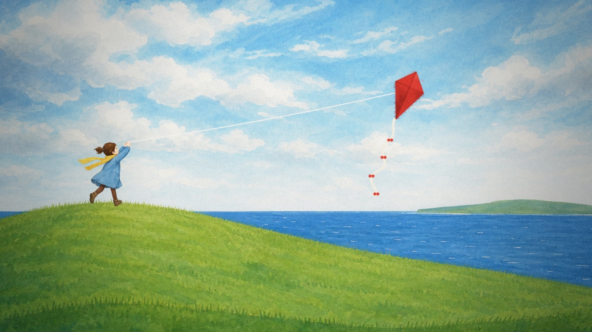
1. First flight the bond
A windy hill at the edge of the sea. Wren runs, the kite catches the wind and jumps upward. She laughs and lets out more string. The two of them are clearly a pair: every gust she feels in her hands, it feels in the sky.
- Camera
- Low behind Wren, then tilt up and follow the string to the kite.
- Sound
- Wind, gulls. The Tug motif plays once, low and high together.
- Ends on
- A wide shot of girl, string and kite making one line.
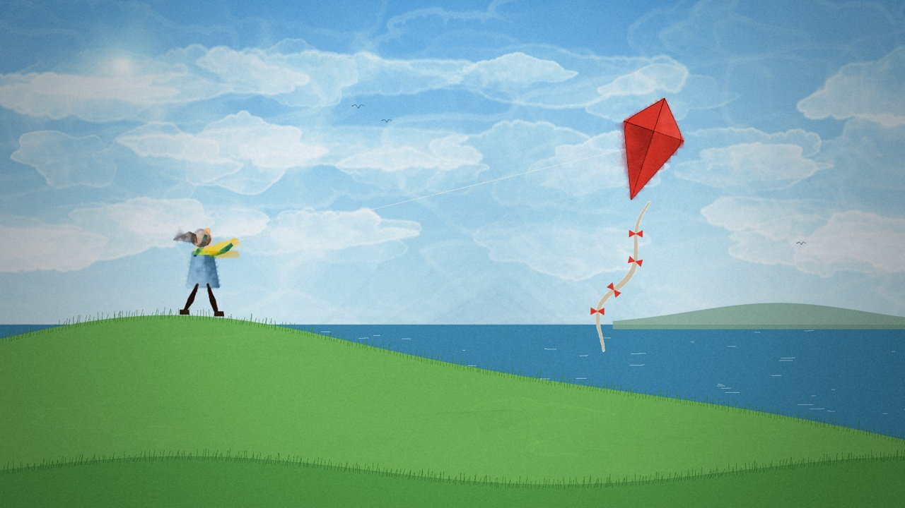
Code Kite bobs and sways; tail ripples; string follows her hands; slow push-in.
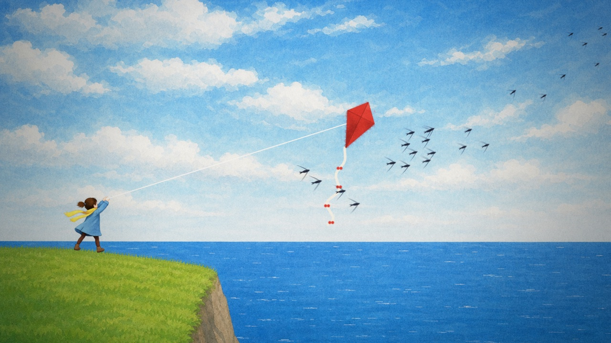
2. The end of the string the want
The kite climbs until the string runs out and jerks taut. Just then a flock of swifts pours past it, swirling and diving and heading out over the open sea. The kite leans after them, but the string holds it back.
- Camera
- Kite POV: the swifts sweep around the lens and leave.
- Sound
- A swirl of woodwinds for the flock. The motif is cut off mid-phrase by the snap of the string going tight.
- Ends on
- The tail ribbon curling out toward the horizon, wanting to follow.
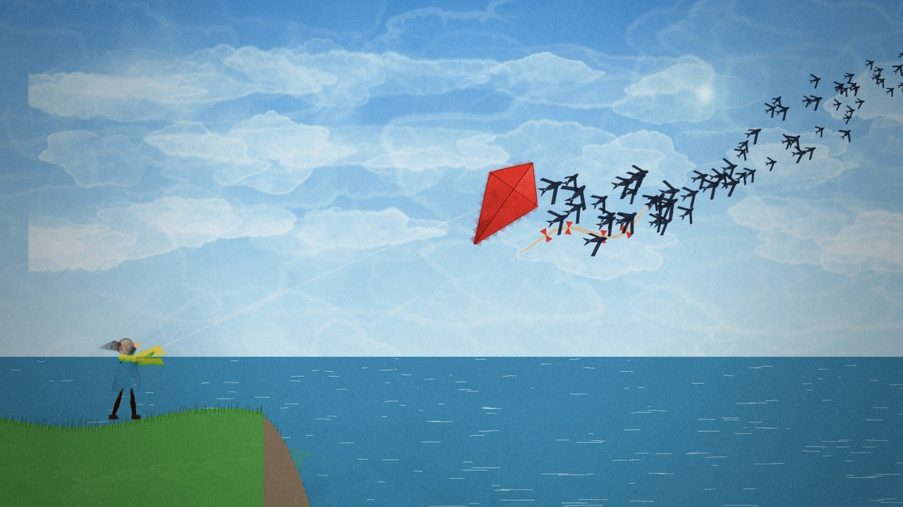
Code Kite climbs and jerks taut at 0:15; 60 swifts stream past toward the horizon; the tail turns to follow them.
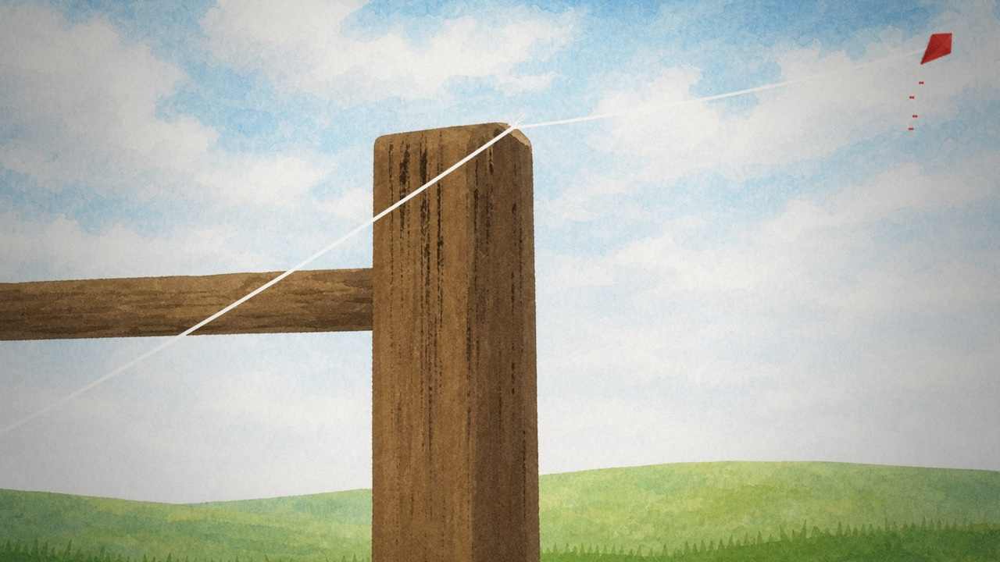
3. Tugging rising tension
The kite starts fighting. It dives left, swings right, yanks hard. Wren thinks it’s a game and laughs, digging in her heels. The string drags back and forth over the top of an old fence post. We see what she doesn’t: the string is fraying.
- Camera
- Cut between the kite thrashing (wide) and the post (extreme close-up), cutting faster each time.
- Sound
- The motif plays faster and off-balance. Each scrape of the string is a rasp from the string section.
- Ends on
- One last strand left, still taut.
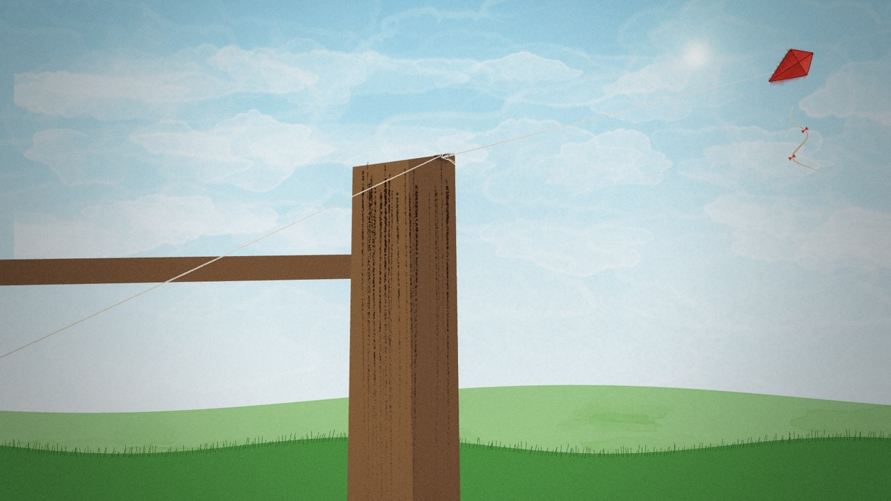
Code String saws back and forth across the post's corner, frays (strands multiply) and thins to one strand; kite thrashes; push-in on the corner.
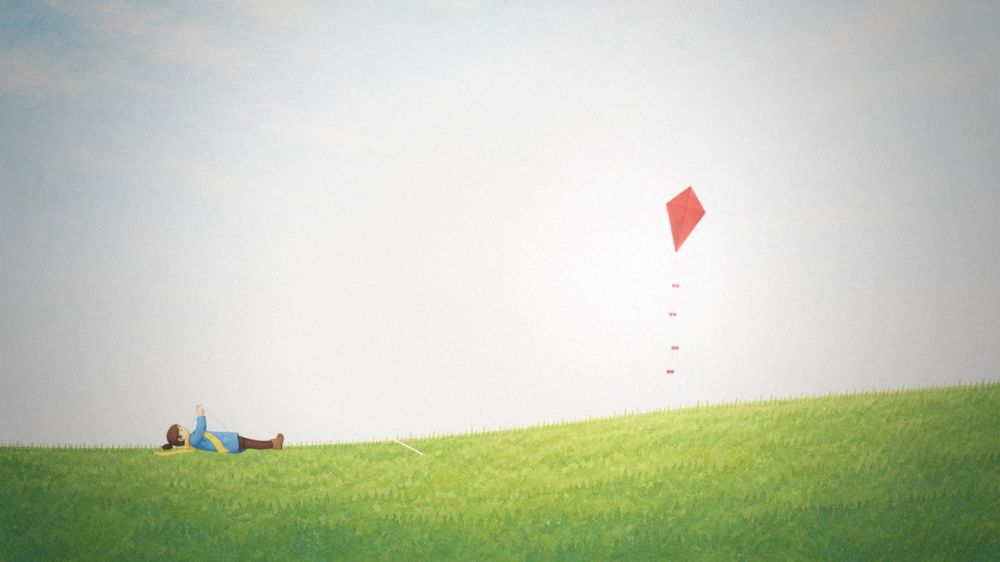
4. Snap turning point
A big gust. Ping. Wren falls flat on her back in the grass and is left holding a limp, empty string. The kite shoots upward like a cork popping out of water.
- Camera
- One overexposed white frame on the snap, then a hard cut to the kite’s POV rushing up.
- Sound
- Two beats of complete silence after the ping, then a big upbeat swell.
- Ends on
- Wren’s face, more confused than upset. She looks up.
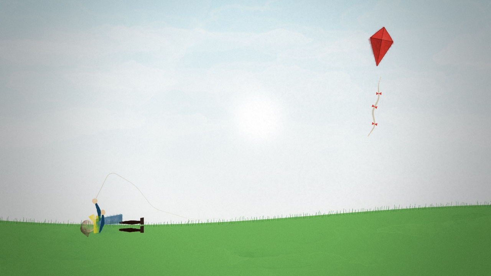
Code White flash; the kite flies off trailing the broken end; her half of the string falls slack onto the grass.
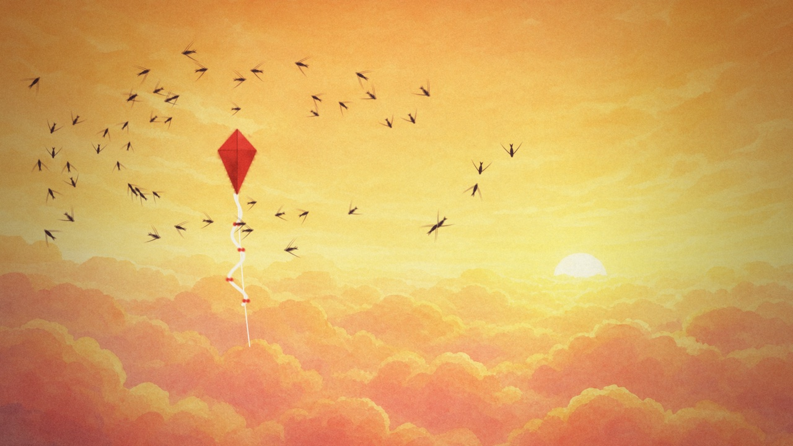
5. Free false victory
Pure joy. The kite breaks through the clouds into a golden sunset sea, and the swifts take it into the flock. It loops, rolls and dives with them. This is the most beautiful shot in the film, and it should feel earned. Underneath it, the broken string hangs slack and swaying.
- Camera
- Big sweeping crane moves with the flock. Plenty of lens flare.
- Sound
- The high note of the motif on solo flute, soaring, and never answered by the low one.
- Ends on
- The swifts peel away toward the horizon, much faster than the kite can go. It’s alone.
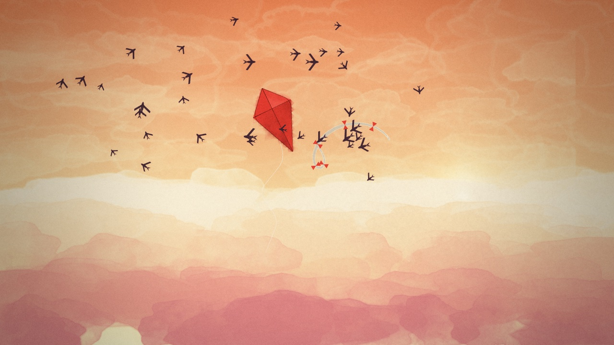
Code Figure-eight loops; the flock orbits the kite, then peels away at ~1:03; broken string swings beneath.
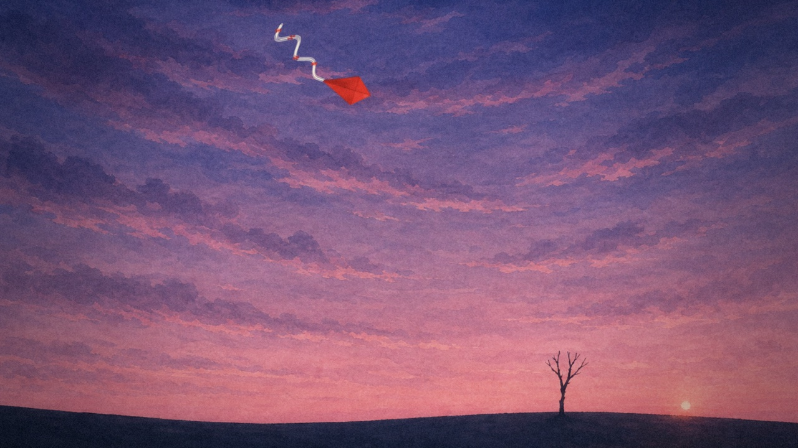
6. Nothing to push against the fall
The wind shifts. A tethered kite would lean against the string and climb. This one has nothing to lean against, so it flips over. It tries to right itself and flips again, then spins down through the clouds into a darkening sky.
- Camera
- Locked off and wide. The kite gets smaller as it falls, and the camera doesn’t go after it.
- Sound
- The flute keeps trying to start its high note and keeps getting cut off. The wind gets louder.
- Ends on
- A rough crunch as it lands in branches.
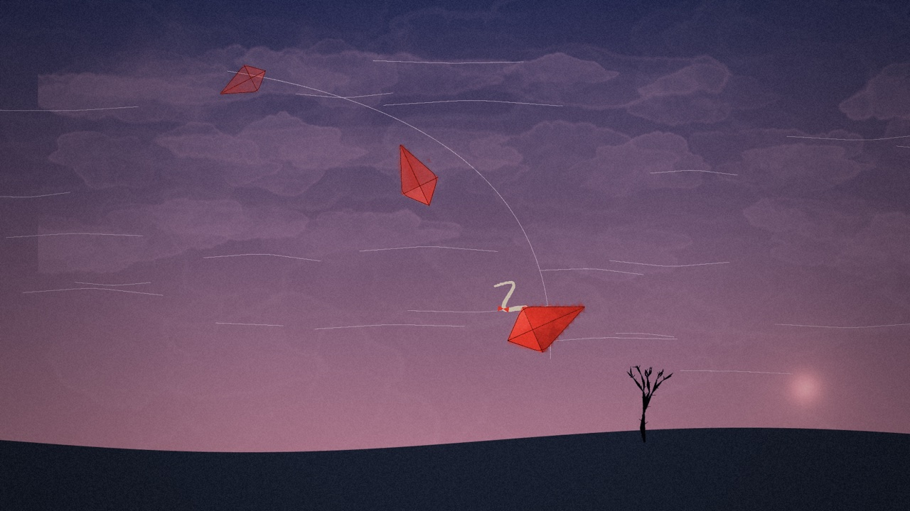
Code Tumbles down the dusk toward the thorn tree, spinning faster as it falls, shrinking into the distance.
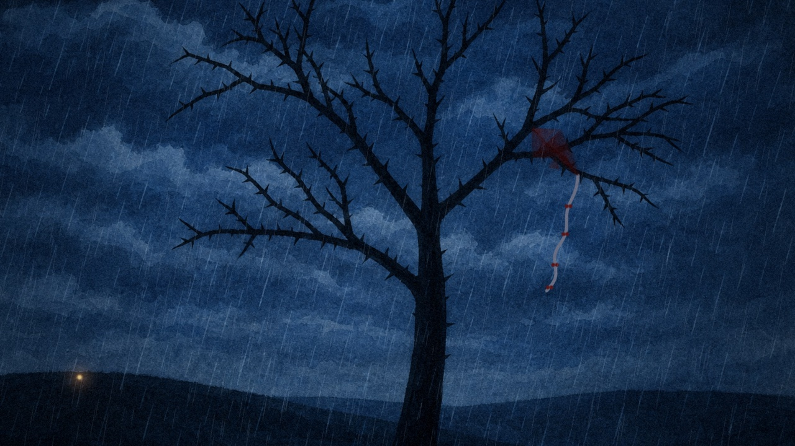
7. The thorn tree all is lost
Night and rain. The kite hangs torn in a thorn tree with its tail knotted in the branches. The swifts are gone, the sky is empty, and it can’t move. For the first time the kite looks small.
- Camera
- One long still shot, about 8 seconds. Rain is the only thing moving.
- Sound
- The film’s one true silence (just rain), then a single low cello note: the missing half of the motif, coming from far away.
- Ends on
- A warm dot of light appears on the hill below.
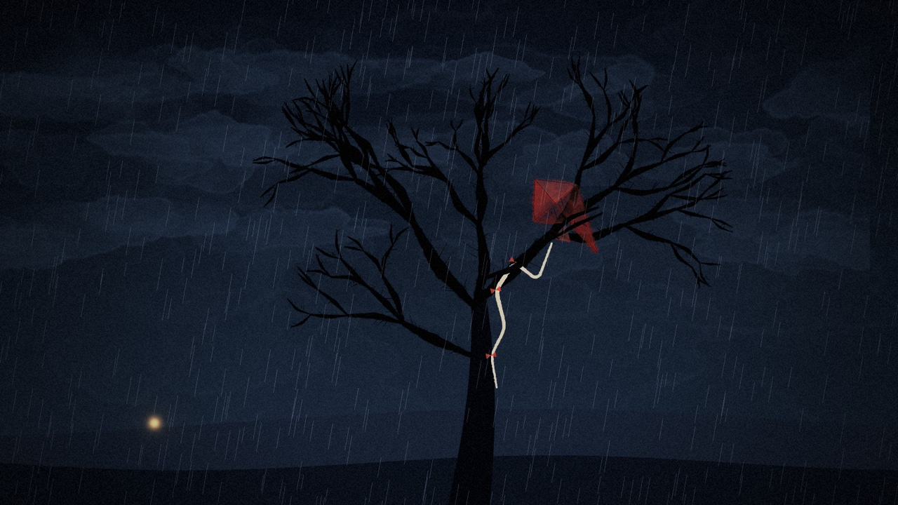
Code Rain falls; the torn kite sways in the branches (dimmed for night); the lantern fades in at ~1:27.
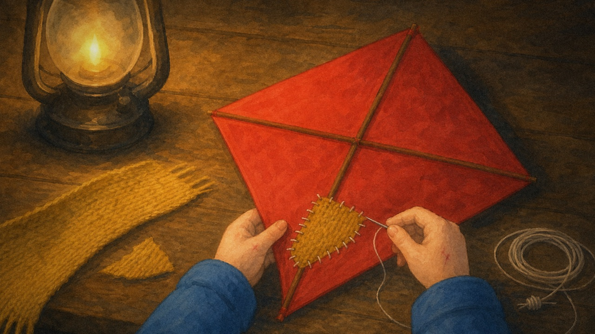
8. The mend reconnection
Wren climbs the thorn tree with a lantern and gets scratched doing it. She carries the kite home under her coat. At the kitchen table she patches the tear with her own yellow scarf (the scarf from beat 1) and ties the broken string back together. The knot is lumpy and obvious. She doesn’t hide it.
- Camera
- Close-ups of hands: thread, scissors, the knot being pulled tight. Warm lamplight.
- Sound
- Solo piano picks up the low note, quietly, and waits for the high one.
- Ends on
- The knot in extreme close-up.
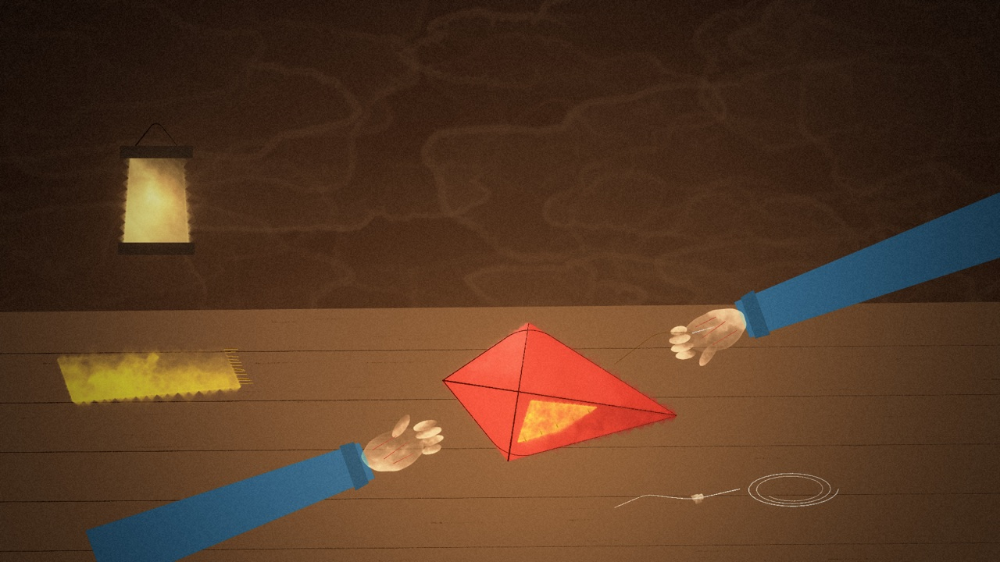
Code Slow push-in on the patch; the lantern breathes.
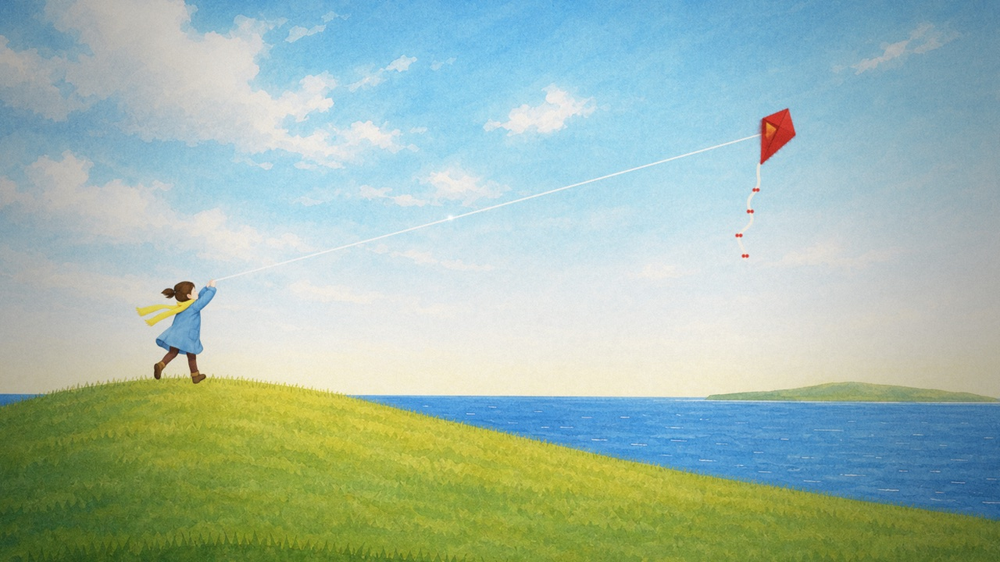
9. Leaning in climax & resolution
Morning on the hill. Wren launches the patched kite. The wind hits, and this time the kite leans into the string instead of fighting it, and the pull sends it up. Higher than in beat 2. Higher than above the clouds. The swifts come back and circle it. It doesn’t follow them when they leave. It doesn’t need to.
- Camera
- Track along the taut string from Wren’s hands, past the knot glinting in the sun, all the way up to the kite.
- Sound
- The Tug, finally complete: low and high together in full strings, with the swifts’ woodwinds weaving around it.
- Final shot
- Very wide: one bright line from girl to kite with a yellow speck at the top. Cut to black. Title: TETHER.
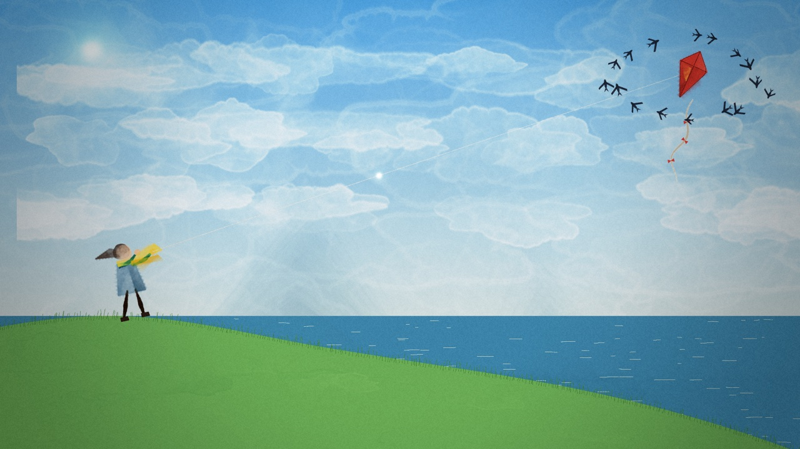
Code The patched kite climbs on a taut string; the knot glints; the swifts return and circle it; fade to the title.